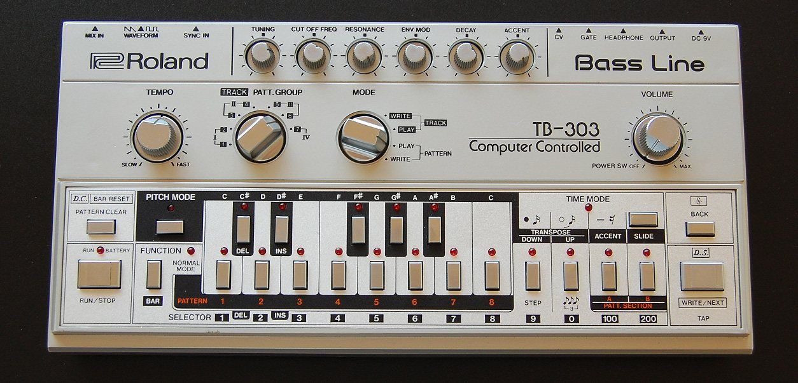

SEQUENCE 001
1977 年，西德慕尼黑。意大利制作人 Giorgio Moroder 正在给美国歌手 Donna Summer 做一首新歌。和当时所有的迪斯科不同，这首歌的伴奏几乎全部来自一台 Moog 合成器：一条贝斯线以十六分音符的速度永不停歇地跳动，像一台精确的机器。
据说，当时正在柏林录音的 David Bowie 听到这首歌时，他的合作者 Brian Eno 冲进录音室说：就是它了，这首歌会改变接下来十几年的舞曲。
这首歌叫《I Feel Love》。Eno 说对了：接下来出现的浩室、Techno、Trance，几乎都能在那条机器般的贝斯线里找到影子。
上一章的嘻哈用唱片和采样器做音乐；这一章的音乐更彻底，几乎全部由机器生成：鼓机、合成器、音序器，后来是电脑。它们最初只为一个目的服务：让舞池里的人一整夜跳下去。
“电子舞曲”（electronic dance music）是一个很大的伞，下面有几十种子类型，乐迷对它们的区分非常讲究，往往从速度、鼓的打法和低音的样子就能分出来。这一章按历史顺序走一遍，每到一站都听一听它的“发动机”。
01 · what什么是电子舞曲
和前面的类型比，电子舞曲有几个特别之处：
- 机器演奏：鼓机、合成器、采样器和电脑，大多数声音没有“演奏者”
- 为舞池设计：稳定的速度（BPM）、反复的律动、长长的前奏和尾奏，方便 DJ 把一首接到下一首
- DJ 是主角：观众去俱乐部往往不是为了看某首歌的作者，而是为了听某位 DJ 一整晚的混音
- 积累与释放：几分钟慢慢积累张力，然后在某一刻全部释放（drop）
- 按速度分家：浩室约 120–128 BPM，Techno 约 125–140，丛林和鼓打贝斯约 160–180……速度常常是一种风格的身份证
02 · disco迪斯科：舞池的诞生
1970 年代初，纽约出现了一些新的夜店：DJ 不再只是放完一首换一首，而是把歌接起来，让音乐整夜不停。舞池里有很多黑人、拉丁裔和同性恋者，他们在主流社会里常常没有位置，在舞池里却可以自由地做自己。
为了让 DJ 好接歌，唱片公司开始发行12 英寸单曲：同一首歌，加长前奏和间奏，沟槽更宽，声音更响。C1 灵魂乐那一章说过的费城灵魂乐鼓手，用“每拍一下底鼓，反拍一下开镲”的打法，给迪斯科定下了节奏的基础：
迪斯科在 1970 年代末火遍全球，也招来了强烈的反感。1979 年在芝加哥的一场棒球赛上，一位电台 DJ 组织了“迪斯科粉碎之夜”，当众炸毁了大量迪斯科唱片，现场一度失控。很多人后来指出，这场“反迪斯科”运动里夹杂着对黑人和同性恋群体的敌意。迪斯科从主流退场了，但它在地下活了下来，变成了下一节的浩室。
四拍底鼓、反拍开镲、八度跳动的贝斯、弦乐。
Moroder 式：一条十六分音符的合成器贝斯，像机器一样不停跳动。
Kraftwerk 式的机器人声：把人声变成合成器。
03 · house芝加哥：浩室与酸性
1977 年，纽约 DJ Frankie Knuckles 搬到芝加哥，在一家叫 The Warehouse（仓库）的俱乐部打碟。他把迪斯科、欧洲电子乐和灵魂乐混在一起，还用鼓机给老唱片“加鼓”。人们去唱片店找“仓库里放的那种音乐”，店员就在架子上标“house music”，这就是浩室（house）名字的一种常见说法。
浩室的声音很简单：罗兰 TR-909 / TR-808 鼓机的四拍底鼓，反拍的开镲，钢琴和弦的切分“刺”，一条灵魂乐式的人声。它便宜、好做，芝加哥的年轻人用几台二手机器就能在家里做出唱片。
酸性：一台“失败”的低音机
罗兰公司 1981 年推出过一台小小的低音合成器 TB-303，本来是给吉他手练琴时当“电子贝斯手”用的。它模仿真贝斯模仿得很差，很快停产，在二手店里很便宜。芝加哥的几个年轻人买到一台，把它的“共振”旋钮拧到底，一边播放一边转动“截止频率”旋钮，得到一种尖叫、扭曲、像液体一样“吱吱”作响的声音。1987 年 Phuture 的《Acid Tracks》让这种声音有了名字：酸性浩室（acid house）。
909 式鼓、钢琴和弦的切分、温暖的低音。
同一条低音线，共振和滤波都不动。
共振拧高，滤波旋钮来回扫。

04 · techno底特律与柏林：Techno
在芝加哥东边的底特律，三个在郊区贝尔维尔一起长大的黑人少年 Juan Atkins、Derrick May 和 Kevin Saunderson（人称“贝尔维尔三人组”），同时迷上了德国乐队 Kraftwerk 的冷峻电子乐和美国的放克。底特律是一座汽车工业衰落中的城市，他们想象的是一种属于未来、属于机器的音乐。1988 年，一张英国发行的合辑《Techno! The New Dance Sound of Detroit》让 Techno 这个名字流传开来。
和浩室比，Techno 通常更快、更冷、更少人声，更像一台循环运转的机器：一个短小的动机反复几分钟，只靠音色和滤波的细微变化推动。Derrick May 的《Strings of Life》则证明了它也可以充满弦乐般的激情。
1989 年柏林墙倒塌后，东柏林留下了大量空置的工厂、发电站和地下室。Techno 在这些废墟里找到了第二个家：1991 年开业的 Tresor 俱乐部就在一座旧百货公司的金库里。今天的柏林仍是世界 Techno 的中心。
有旋律的合成器弦乐，放克的切分。
黑暗、极简、低沉的轰鸣，一个动机重复到催眠。
05 · djDJ：积累、drop 与混音
电子舞曲的结构是为 DJ 和舞池设计的。一首典型的舞曲大致是这样：
- 前奏：只有鼓，方便 DJ 和上一首歌对齐
- 积累（build-up）：底鼓停下或变稀，军鼓越来越密，一个“上升音效”（riser）越来越高，滤波器慢慢打开
- Drop：一切在同一瞬间落下，底鼓和低音全力回来。舞池在这一刻举手
- 间歇（breakdown）：再次抽空，给大家喘口气，然后再积累、再 drop
DJ 的基本功是对拍（beatmatching）：把下一首歌的速度调到和正在放的歌一样，让两首的底鼓完全重叠，然后在一个乐句的开头（通常是 16 或 32 小节）把音量慢慢交给下一首。观众听到的是一整晚不停的音乐。
军鼓越来越密，音效越来越高，然后一下落地。
同一段音乐，先“关在门外”，再慢慢把门打开。
两首不同的曲子对齐底鼓，交叉渐变。
06 · rave英国：锐舞、丛林与 dubstep
1987 年，几个英国年轻人在西班牙伊维萨岛度假，听到了芝加哥的浩室；回国后，酸性浩室在英国爆发。1988 年和 1989 年的夏天被称为“第二次爱之夏”：成千上万的年轻人开车去乡间的仓库和田野，参加通宵的非法派对，这就是锐舞（rave）。
英国人接着把舞曲往不同的方向推：
- 丛林 / 鼓打贝斯（jungle / drum and bass）：把上一章的“Amen break”等嘻哈鼓点加速到 160–180 BPM，切碎重排，底下是缓慢而极深的低音。上半身跟着鼓狂奔，下半身跟着低音摇摆
- 英国车库（UK garage / 2-step）：更慢、更摇摆，底鼓故意“漏掉”几拍，跳起来一步一顿
- Dubstep：2000 年代初起源于伦敦南部的克罗伊登，140 BPM 但军鼓只在第三拍，听起来像半速；最有名的是“摇摆低音”（wobble bass）：低音被一个周期性的滤波器拧来拧去，发出“哇哇哇”的声音
约 170 BPM 的碎鼓，极深的低音。
约 132 BPM，一步一顿的摇摆。
140 BPM 半速感，摇摆低音。
07 · edmTrance 与 EDM：万人的 drop
1990 年代的德国和荷兰发展出了 Trance（迷幻舞曲）：约 130–140 BPM，大段的积累，宽广的“超级锯齿波”和弦，悠长而充满希望的旋律。西班牙的伊维萨岛成了全世界电子乐迷的度假圣地。
进入 2010 年代，电子舞曲在美国爆发，被统称为 EDM。DJ 成了体育场级的明星，比利时的 Tomorrowland（2005 年创办）、美国的 Electric Daisy Carnival 等音乐节吸引数十万人。EDM 的 drop 越来越夸张，越来越像一次集体的“爆炸”；它也和流行音乐深度融合，《当代流行》一章会讲到的侧链压缩、四拍底鼓，很多就是从这里流进去的。
138 BPM，超级锯齿波和弦与长长的旋律。
积累、一拍安静，然后一个巨大的合成器“炸”下来。
08 · ambient不只是跳舞：氛围与日本
电子乐并不都在舞池里。1978 年，Brian Eno 录制了《Music for Airports》（次年初发行），提出“氛围音乐”（ambient）的概念：一种可以被认真听，也可以被忽略的音乐，像房间里的光线一样。他的一个方法是把几段长度不同的录音带做成循环同时播放：因为长度不同，它们永远不会以同样的方式重合，音乐也就永远在缓慢变化。
三条长度不同的钢琴和长音循环，自己慢慢变化。
早期电脑和游戏机的“芯片音乐”：方波旋律、噪声鼓。
还有一件很容易被忽略的事：电子舞曲的很多“乐器”来自日本。罗兰公司（1972 年创立于大阪）的 TR-808、TR-909、TB-303，以及雅马哈、Korg 的合成器，几乎塑造了整部电子舞曲史。1978 年成立的日本乐队 Yellow Magic Orchestra（YMO）用电脑和合成器演奏流行歌，影响了欧美的电子流行、早期嘻哈，也影响了日本的游戏音乐。
不只是舞池之外，电子乐也走进了家里的耳机：Aphex Twin 等人的“智能舞曲”（IDM）、为学习和放松做的 lo-fi，都是从舞曲长出来、却不一定用来跳舞的分支。
09 · chinese中文世界的电子乐
中文世界的电子舞曲场景起步较晚，但发展很快：
- 1990 年代末到 2000 年代：北京、上海出现了第一批地下电子乐派对和俱乐部。上海一家开在旧防空洞里的俱乐部 Shelter（2007–2016），被很多人看作中国地下电子乐的摇篮
- 独立制作人：北京的 Howie Lee 等制作人把中国乐器、戏曲和方言采样放进电子乐，发展出带有强烈地方色彩的声音
- 2010 年代 · 电音节：大型电音节在上海、北京等城市兴起，国际 DJ 频繁来华演出，电子舞曲进入了更多年轻人的视野
- 流行与短视频：今天的中文流行歌和短视频配乐里，大量使用 EDM 的 drop、侧链压缩和电子鼓，这也是《当代流行》一章会讲到的“流行吸收一切”
10 · listen听：本章十二首曲目
按时间排成十二张霓虹传单。电子舞曲很多是七八分钟的“俱乐部版”，平台上常常同时有短的“电台版”，两种都可以听。
11 · practice练 · 术语表
练习 1：找那条贝斯线
听《I Feel Love》，跟着那条不停跳动的贝斯线拍桌子。它一直在变吗？什么在变？
练习 2：听 303
听《Acid Tracks》，找出 303 的声音什么时候变“亮”、什么时候变“闷”。对照图 3。
练习 3：等 drop
听《Levels》或《Scary Monsters and Nice Sprites》，在 drop 来临前一秒举手。你猜对了吗？对照图 4。
练习 4：数 BPM
跟着《Around the World》和《Inner City Life》拍手，各数十五秒，乘以四，大约就是 BPM。哪首更快？对照图 7。
练习 5：在家里听氛围
找 Brian Eno 的《Music for Airports》，在做别的事时放着。过一会儿你还注意到它吗？
术语表
- 电子舞曲
- 以电子乐器制作、为舞池设计的音乐总称
- BPM
- 每分钟拍数，电子舞曲风格的重要标志
- 四拍底鼓
- four-on-the-floor，每拍一下底鼓
- 12 英寸单曲
- 为 DJ 设计的加长版单曲唱片
- 音序器
- 按设定顺序自动演奏音符的设备
- 合成器
- 用电子电路或软件生成声音的乐器
- 声码器
- vocoder，把人声的口型“印”到合成器上的效果
- 浩室
- house，起源于芝加哥的舞曲，约 120–128 BPM
- 酸性浩室
- 以 TB-303 共振滤波声为特点的浩室
- 截止频率
- 滤波器开始削减声音的频率点
- 共振
- 在截止频率附近形成尖峰，使声音“吱吱”作响
- Techno
- 起源于底特律、在柏林壮大的机械感舞曲
- 对拍
- beatmatching，把两首歌的速度和底鼓对齐
- 积累
- build-up，drop 之前逐渐增加张力的段落
- drop
- 积累之后所有声音同时落下的高潮
- 锐舞
- rave，通宵的大型电子乐派对
- 丛林 / 鼓打贝斯
- 约 160–180 BPM 的碎拍舞曲，深沉的低音
- dubstep
- 140 BPM 半速感、以摇摆低音著称的英国舞曲
- LFO
- 低频振荡器，用来周期性地控制音量、滤波等参数
- Trance
- 130–140 BPM，长积累、宽广和弦与旋律的舞曲
- EDM
- 2010 年代美国对大型电子舞曲的统称
- 氛围音乐
- ambient，可以专心听也可以忽略的环境式音乐